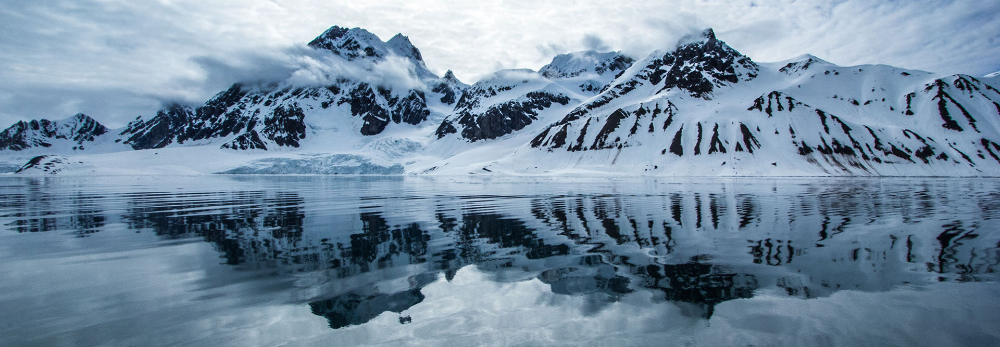

Looking Closer
After working on the first part of the project, I was interested in what made some states more green than others, and if this had any correlation to the 2016 elections on a smaller scale as well. By researching county health rankings for certain states, I was able to see which areas were “more green”, and was able to compare this to the electoral results on a county level. There was no true correlation, but it was interesting to see.
I decided to take a closer look at only three states, the three states that had the closest results in the presidential election. In Minnesota, Clinton only won by 1.5%. In Pennsylvania and Wisconsin, Trump won by a mere 0.7%. What I found interesting was that these three states were ranked relatively high on the green ranking. Minnesota was ranked 7th over all, with a 2 in environmental quality and a 5 in eco-friendly behaviors. Wisconsin was ranked 15th, with a 5 in environmental quality, and Pennsylvania was ranked 21 overall.
If these states were so close to going the other way in the elections, and are all relatively high in the green ranking, they seem like they could be target states for future democratic campaigning, and well as environmental action campaigning. From the first part of my research it was clear there was at least some correlation between democratic states and “greenness,” so it seems as if these states could be the focus of future work.